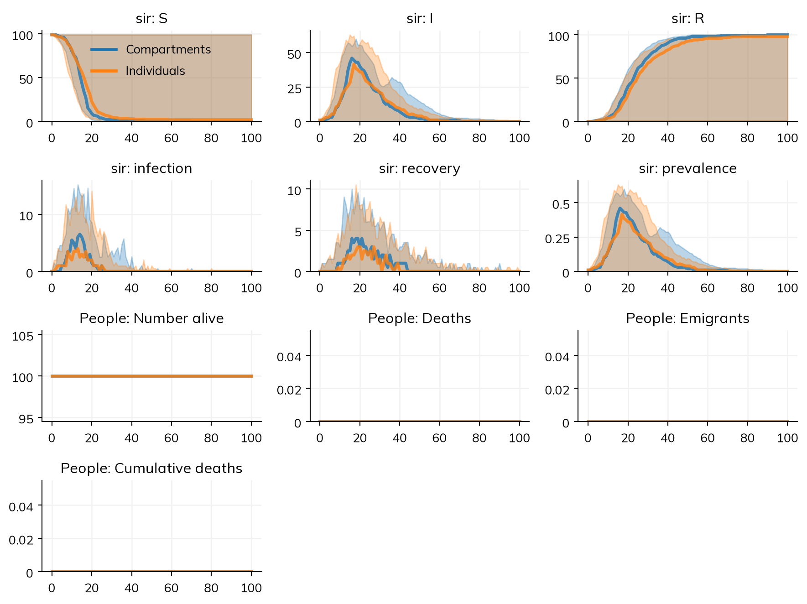

This page is for people who write livestock and plant disease models in EMULSION’s YAML: state machines for health, age, and gestation, parameters with descriptions and sources, prototypes, calendars, herds linked by trade, and one keyword (aggregation_type) to run the same file as compartments, individuals, or hybrid groups. It shows an EMULSION model next to the same model in Starsim, how their results agree, how long each takes, and what works and what does not yet, including what fails.
The same model in both
EMULSION’s compartmental SIR (compart_SIR.yaml), with its comments and banners left out; the individual-based and hybrid versions are two more files of about the same length:
model_name: compart_SIRmodel_info:abstract:'This model is a simple discrete-time, stochastic, compartment-based SIR model. 'author:'Sebastien Picault (sebastien.picault@inra.fr)'time_info:time_unit:'days'delta_t:1origin:'January 1'total_duration:'100'levels:population:desc:'level of the population'aggregation_type:'compartment'processes:population:- infectiongrouping:population:infection:machine_name: health_statekey_variables:[health_state]state_machines:health_state:desc:'The state machine which defines the evolution of health states 'states:-S:name:'Susceptible'desc:'suceptible of becoming infected'fillcolor:'wheat'-I:name:'Infectious'desc:'infected and able to transmit the disease'fillcolor:'maroon'-R:name:'Resistant'desc:'healthy again and resistant to infection'fillcolor:'deepskyblue'transitions:-{from: S,to: I,rate:'force_of_infection'}-{from: I,to: R,rate:'recovery'}parameters:initial_population_size:desc:'initial number of individuals in the population'value:100initial_infected:desc:'initial number of infectious individuals in the population'value:1transmission_I:desc:'transmission rate from infectious individuals (/day)'value:0.5recovery:desc:'recovery rate (/day)'value:0.1force_of_infection:desc:'infection function'value:'transmission_I * total_I / total_population'source:'classical function assuming frequency dependence'percentage_prevalence:desc:'proportion of infected+infectious individuals (%)'value:'100 * total_I / total_population'initial_conditions:population:-population:-total:'initial_population_size'-vars:[S]amount:'initial_population_size - initial_infected'-vars:[I]amount:'initial_infected'outputs:type: csvpopulation:period:1extra_vars:- percentage_prevalence- total_population
In Starsim, one model is run two ways, as compartments (solver='binomial', stochastic and in discrete time, as EMULSION’s compartments are) and as individuals (solver='abm'):
import starsim as ssS, I, R = ss.states('S I R')sir = ss.Disease( infection = ss.Transition(S, I, rate=ss.perday(0.5) * I), recovery = ss.Transition(I, R, rate=ss.perday(0.1)), init_n =dict(I=1),)compartments = ss.Sim(sir, total_pop=100, stop=ss.days(100), solver='binomial', verbose=0)individuals = ss.Sim(sir, total_pop=100, stop=ss.days(100), solver='abm', verbose=0)msim = ss.parallel({'Compartments': compartments, 'Individuals': individuals}, n_runs=20)msim.plot()
Starsim kernels: Rust, OUT OF DATE (built before its source last changed, so results may be wrong): run "./build" in starsim/solvers/rust/

Descriptions and sources can be kept with doc= and source= on an ss.par, and sim.describe() prints them with the model as Starsim has read it, with every default it filled in marked as a guess.
How the results agree
Model
Agreement
The SIR (above)
As compartments, agree: the mean of 200 runs peaks at 37 infectious on day 18, as in EMULSION, with 85 recovered at the end in both. As individuals, lower: 77 recovered against 81, as more runs die out early (22% against about 19%)
EMULSION’s quickstart (age groups, gestation, health, births, and quarantine)
Agree, with six workarounds written by hand: every count within 1.4 animals at every step once the quarantine period is moved to the steps EMULSION applies it on (up to 6.5 animals in quarantine as written)
EMULSION’s metapopulation example (10 populations, an SIR crossed with juveniles and adults, births from adults, density-dependent deaths)
Agree, with the two state machines crossed by hand into six states: at day 100, 1,508 animals against 1,499, 36.4 infectious against 36.8 (means of 100 runs)
Timings
Lines are lines of model code (not counting blank lines, comments, imports, or plotting, and counting a line over 100 characters twice), against the lines of EMULSION’s YAML; times are for one run. Both are measured by Starsim’s north-star script, tests/north_star/north_star.py in the lingua_franca_design repo (see the index page). EMULSION 1.1.1’s times were recorded on the same machine, as a whole command (emulsion run), of which about 0.7 s is starting Python and reading the model.
Model
Lines: EMULSION
Lines: Starsim
One run: EMULSION
One run: Starsim
The SIR, as compartments
81 (86 for the individual-based file)
7, for both
0.81 s as a command; the simulation about 0.06 s
0.012 s to build and run (0.054 s the first time in a new process)
Pass
The quickstart
280 (about 80 of them descriptions, names, and colors)
75
1.5 s as a command; the simulation 0.52 s
0.25 s (2.1 s the first time)
Pass
The metapopulation example, 100 runs
150
17
124 s
0.59 s
The quickstart with 10,000 animals
Did not finish one run in 600 s
About 0.5 s for the run itself, at 100,000 animals
The last two rows were measured on 17 October 2026, on a machine shared with other jobs.
What works and what does not yet
These are from Starsim’s switching demo for EMULSION users (tests/switching/test_emulsion.py in the lingua_franca_design repo), which checks each task against EMULSION’s published output, and from the review it was built from. “Fails” means the demo’s check does not pass today.
Task
Today
Import the SIR files (compartments, individuals, hybrid)
Works: each with the matching solver, printing how each rate was read; the import is Starsim code (sim.imported.code) close to one written by hand
A proba in the YAML, which EMULSION reads per time unit
Works: after one 7-day step with proba: 0.1, 47.8% are still infectious, as in EMULSION
Import the quickstart
Fails: 13 parts are listed as not translated (the age machine’s J -> A, conditions, escape, on_cross actions, when, statevars, the calendar), and the run, which warns and gives a prompt for an AI assistant to finish the import, ends with 15 animals against EMULSION’s 66
A minimum stay in a state (duration as a guard, with escape)
Works: after= on a transition, as agents, and as compartments by a conveyor of whole steps (the chain-binomial run agrees with agents step for step); an escape is a rate while the time in the state is short (rate=ss.perday(0.5)*(E.time < ss.days(10))), as agents
A newborn at each farrowing
Works as agents for one state: ss.birth(NB, per=farrowing, n=10) in the same disease
Newborns by prototype across several state machines, with probabilities from the mother’s state (produce_offspring)
Works as agents: a split on the birth, ss.Transition(M, [I, M], where=newborns & ss.mother(E \| I \| Q, born=True), p=[0.3, 0.7]); the quickstart written by hand with it runs, but still ends with too few animals (66 against EMULSION’s 77 after 53 steps)
Births from one stratum into another (productions: {from: A, to: J}) as compartments
Fails: a birth rate by level raises an error that says this cannot be declared yet; crossing the machines by hand into six states works and agrees (above)
Herds linked by a trade register, with selective sales by state (states='S,R')
Works: ss.geo.Mobility(data=register); 2,000 herds with 26,486 sales in 1.15 s a run as compartments, and the same within noise as agents
The same file as compartments or individuals
Works for models without offspring or conditions across machines (above); hybrid groups are not needed at these speeds
A posterior, from surveillance data
Works: ss.par(..., bounds=), data=, and sim.fit(method='pmcmc') (or 'abc-smc' for agents); EMULSION has no fitting
Bringing your model in
ss.import_from('model.yaml', format='emulsion') reads an EMULSION model. Each state machine becomes a disease, whose states are the machine’s states and whose transitions are its transitions; rates and probabilities (per time unit, as EMULSION reads them) are translated, a state’s minimum stay becomes after= on the ways out of it, and the level’s aggregation_type chooses the solver. Conditions, calendars, actions on crossing, offspring and productions, levels above the population, and variables of individuals are listed as not translated (sim.imported.incomplete), and sim.imported.prompt is a prompt for an AI assistant with Starsim’s import-model skill to finish the job.
See Import/export for importing in general: checking an import, keeping it as code, and finishing one that is incomplete.
Further reading
EMULSION: the paper: the design of the language, with its example models (PLOS Computational Biology, 2019)
EMULSION on PyPI: installing it, with links to its documentation and tutorials